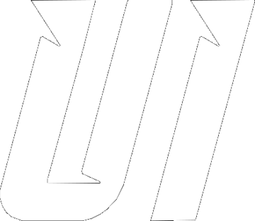
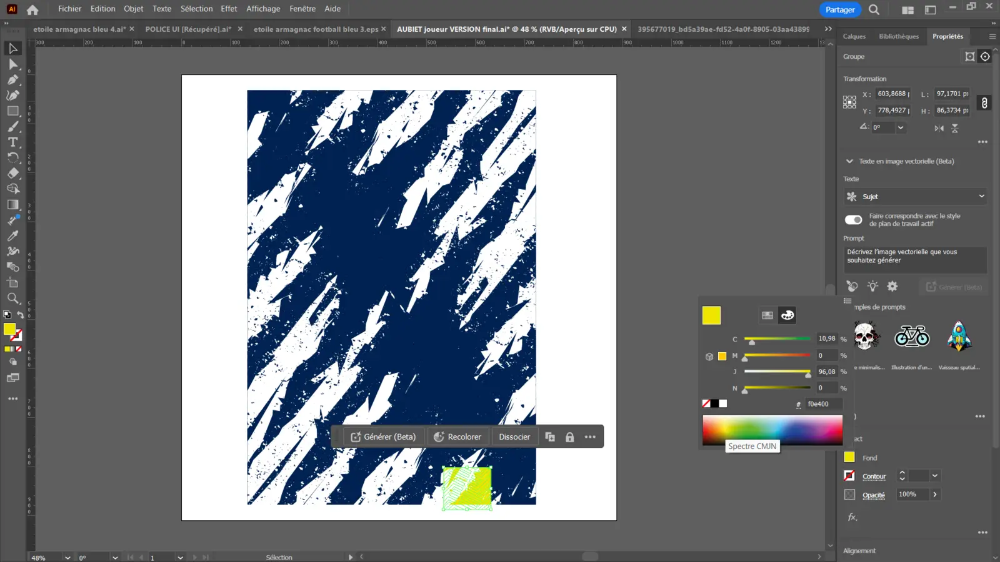
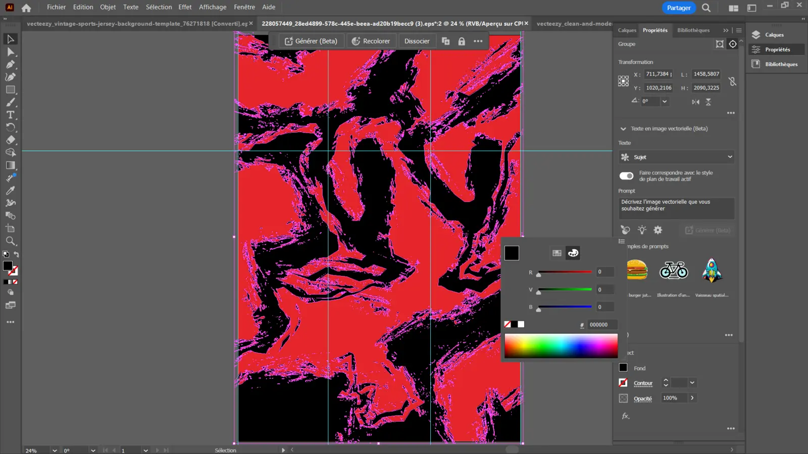

Direction
Nous recueillons vos couleurs, références, contraintes, sponsors et inspirations.

URBAN INSTINCTÉQUIPEMENTIER SPORTIF Créer notre design01 — Notre studio créatif
Nous ne posons pas simplement un écusson sur un maillot uni. Chaque identité est imaginée, dessinée et ajustée autour de l’histoire, des couleurs et de l’ambition de votre club.

Du premier trait au BAT final, le design reste maîtrisé en interne. Cela nous permet de modifier les formes, les couleurs, les textures et chaque emplacement jusqu’à obtenir une tenue cohérente avec votre identité.

Nous partons de votre club, pas d’un modèle générique déjà utilisé par des dizaines d’équipes.
Vous gardez la main sur la direction. Nous apportons la création, les propositions et les ajustements nécessaires avant la production.
Nous recueillons vos couleurs, références, contraintes, sponsors et inspirations.
Le motif, les détails et les placements sont dessinés spécifiquement pour votre club.
Nous explorons différentes pistes et ajustons le design selon vos retours.
Chaque logo, sponsor, numéro et couleur est vérifié avant le lancement en production.